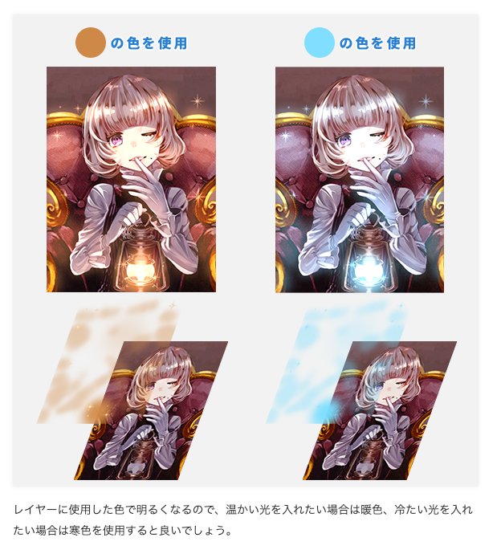

COMMERCIAL
Web
ガイドブック掲載ページの作成
WebDesign / Cording
URL
自社アプリを使ったイラスト制作の本の紹介ページ。
本の内容を踏まえたデザインを作成しました。
▼課題とコンセプト
- 本の購入意欲を促進させる
- 複数ある書籍の差別化を図る
▼工夫した点・実績
■親しみやすさの表現
アプリのユーザー層に合わせ、イラスト制作を楽しむ雰囲気が伝わるビジュアルを意識しました。書籍ごとにターゲット読者や難易度が異なるため、それぞれの個性が一目で伝わるようにデザインに差をつけ、複数タイトルの並列掲載でも見分けやすい構成にしています。
■統一感と個性を両立したデザイン
複数書籍を掲載するため、ページの雛形は統一しつつ、各書籍の世界観やターゲット層に合わせたデザインを展開しました。書籍のカバーデザインや内容から要素を抽出し、ページのビジュアルに反映させることで、どの書籍かが一目で伝わる個性を持たせています。

▼制作期間
- 2024年3月
- 1カ月
▼担当領域
- ディープブリザードと学ぶ たのしいアイビスペイント入門教室
- ［公式］アイビスペイントの教科書 スマホではじめるイラスト超入門
- ページ構成の考案
- デザイン作成
- HTML作成・実装
- レスポンシブ対応
- バナー作成
▼制作ツール
- Photoshop
- Illustrator
- VScode
- Git
- HTML
- CSS
▼制作体制
- 1人で担当
新機能紹介ページの改善
ibisPaint - 新機能紹介ページの改善
URL
自社アプリの新機能を紹介するページの改善
▼課題とコンセプト
- 機能数が多いと読む気が失われる
- トップの機能にしか目が行かない
- 定期作業なので、少ない工数で対応したい
▼工夫した点・実績
■追加機能の多さのインパクト
機能の多さをネガティブにではなく「これだけ進化した」という訴求に転換するため、目次を設けて全体量を可視化しました。各機能へのアンカーリンクも設置し、気になる機能にすぐ移動できるUXを実現しています。
■運用の改善
従来の画像ファイル命名規則（ver[バージョン番号]_[連番].png）は、制作途中の順番変更のたびに連番修正が発生し、余分な工数がかかっていました。ver[バージョン番号]_[機能名称]_[連番].png という形式に変更することで、機能グループ単位での並び替えのみで対応できるようになり、定期更新の運用負荷を大幅に削減しました。
▼制作期間
- 2026年4月
- 3日
▼担当領域
- ページ構成の考案
- 原稿作成
- 画像作成
- HTML作成・実装
- レスポンシブ対応
▼制作ツール
- Photoshop
- VScode
- Git
- HTML
- CSS
▼制作体制
- 1人で担当
ユーザー向けコンテストページの改善
WebDesign / Cording
URL
自社アプリを使ったイラストのコンテストページ。
旧式のデザインから、運用のしやすさを重視したデザインにリニューアルしました。
※「第42回素材コンテスト」ページは一例です。
▼課題とコンセプト
- 定期開催するコンテストなので、対応工数を減らす
- ユーザーが見やすい、わかりやすいデザインにする
- リニューアルで過去開催のページのデザインを崩さない
▼工夫した点・実績
■テーマカラーの変数管理による運用効率化
コンテスト回ごとにテーマカラーが変わることを考慮し、CSS変数（カスタムプロパティ）でカラーを一元管理できる設計にしました。色の変更箇所が分散していた従来の構造を改め、変数を書き換えるだけで全体のカラーリングが切り替わるようにしたことで、定期更新の作業時間を大幅に短縮しています。
■ビジュアルの刷新
旧デザインと比較してページ内の画像を増やし、コンテストの雰囲気に合ったポップで賑やかな印象に仕上げました。参加意欲を高めるビジュアル表現を意識しています。
■多言語対応を考慮したレイアウト設計
従来のページは言語によって文字量が変わるとレイアウトが崩れる問題がありました。リニューアルでは文字量の増減に対して柔軟に対応できるレイアウト設計を行い、複数言語での表示崩れを解消しています。
▼制作期間
- 2024年9月
- 7日
▼担当領域
- デザイン作成
- HTML作成・実装
- レスポンシブ対応
- バナー画像作成
- 受賞画像の調整・掲載
▼制作ツール
- Photoshop
- Illustrator
- VScode
- Git
- HTML
- CSS
▼制作体制
- 1人で担当
ユーザー向け講座ページ作成
WebDesign / Cording
URL
自社アプリを使った講座ページ。
複雑な仕様をユーザー向けに噛み砕いた表現を意識して原稿を作成しました。
※「ブレンドモードの詳細」ページは一例です。
▼課題とコンセプト
- 初心者でも理解できる
- 読んでいて飽きない
- 知識として理解できなくても技術の活用ができる
■わかりやすい文章作り
「ブレンドモードによる色の見え方」という専門的なテーマを、初心者ユーザーが直感的に理解できる言葉で伝えることを最優先にしました。エンジニアへのヒアリングを通じて内部処理の仕組みを把握しつつ、技術的な正確さとユーザー目線のわかりやすさのバランスを取りながら原稿を作成しています。読み物として飽きさせないよう、図解画像と文章を組み合わせた構成にも配慮しました。

▼制作期間
- 2024年
- 7日
▼担当領域
- 原稿作成
- 画像作成
- HTML作成・実装
▼制作ツール
- Photoshop
- VScode
- Git
- HTML
- CSS
▼制作体制
- 1人で担当